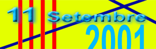

Diada
Nacional de Catalunya 2001
|
Un any més, la Diada Nacional de Catalunya ens reuneix en aquesta plaça amb la voluntat de retre un homenatge al nostre país i, al mateix temps, per reivindicar el nostre dret a la llibertat, com a nació que som de la vella Europa. Les nostres aspiracions col·lectives d’esdevenir un país totalment normalitzat ens han de conduir, inexorablement, a l’acceptació de noves realitats que ens complementen i ens donen sentit. D’uns anys ençà, la immigració ha augmentat en un nombre considerable, a la nostra ciutat, fins i tot, creant barris de diferents ètnies i subgrups socials on la pobresa i la marginació són l’única realitat diària. El nostre poble, creat en gran percentatge per immigrants d’altres contrades i, igualment, obligat a emigrar en molts moments de la història, ha de ser prou generós per acollir els que arriben, fugint de guerres i calamitats, amb un únic objectiu: poder viure amb dignitat la seva condició humana. En tant que poble secularment perseguit, els catalans no permetem actuacions com les del passat agost a les places de Catalunya i d’André Malraux, a Barcelona, que atempten contra els drets bàsics de qualsevol |
persona humana, més enllà de la seva nacionalitat, color de pell o situació laboral. En un dia com avui, de reivindicació col·lectiva i de reflexió íntima, no podem oblidar la nostra condició de nació incompleta, que lluita amb armes democràtiques per assolir l’estatus de nació lliure europea i, per això, ens solidaritzem amb tots aquells pobles que, fent ús d’instruments i arguments no violents, malden per parlar amb veu pròpia en un món que tendeix a la globalització més exclusivista i ultraliberal i als maximalismes d’estats cada dia més reaccionaris i violents contra les immenses minories ciutadanes i ideològiques. Des del nostre àmbit més proper, ja sigui l’Associació de Veïns, el Centre Cultural o l’Agrupació Excursionista, les nostres passes han d’anar encaminades a aconseguir un poble digne dels seus habitants, una ciutat humana i respectuosa amb el medi ambient, un país lliure i solidari i una societat justa i integradora. Els andreuencs i l’Associació de Veïns de Sant Andreu de Palomar no ens hem desinhibit mai de cap d’aquestes reivindicacions i, un any més ho palesem amb la nostra presència en aquesta plaça i amb dos visques carregats de significats: |
Visca Sant Andreu de Palomar !
Visca
Catalunya !
 |
|
|
 |

Tornar